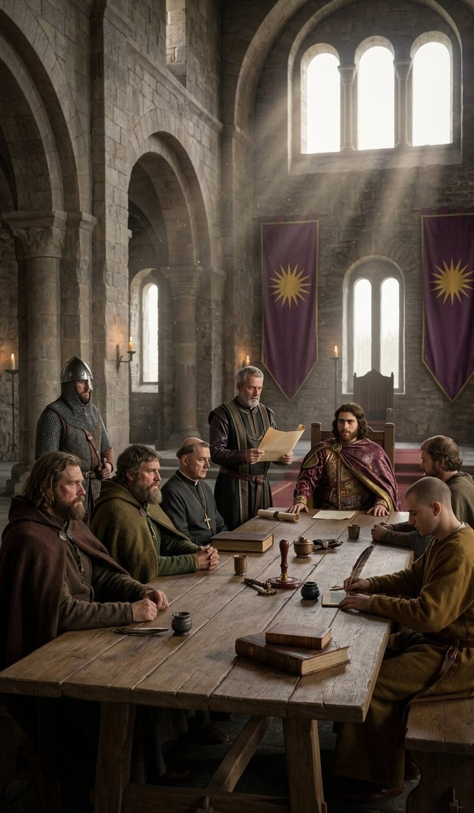
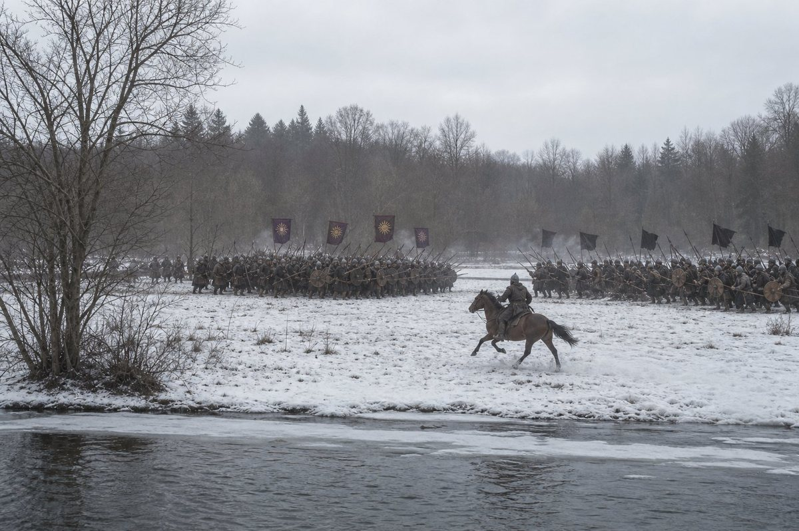
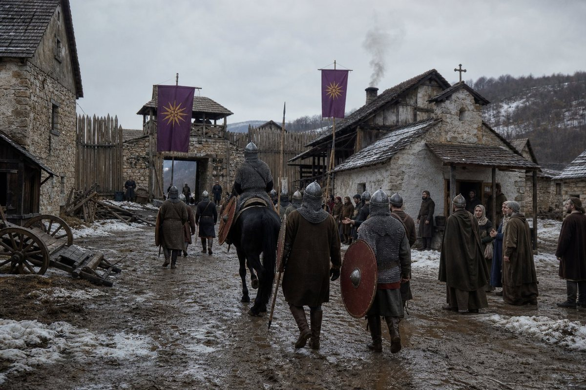
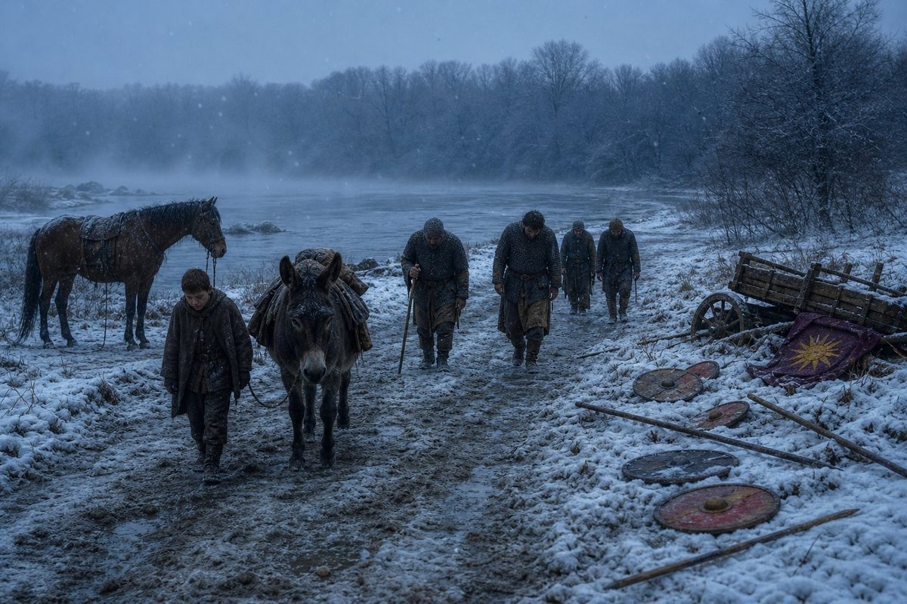
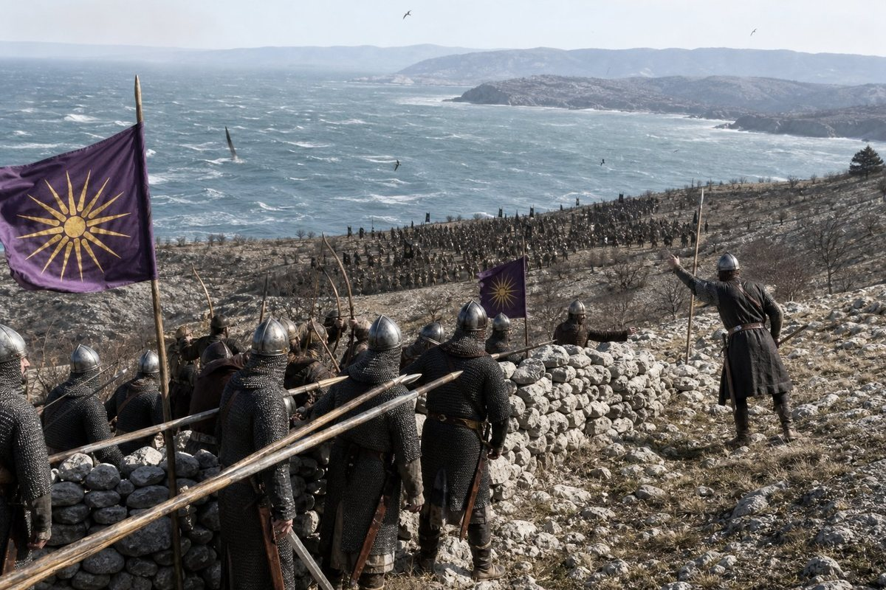
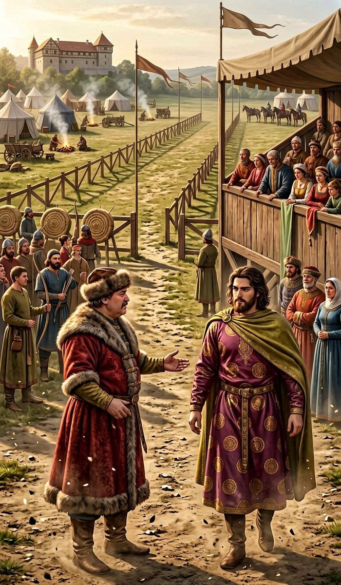
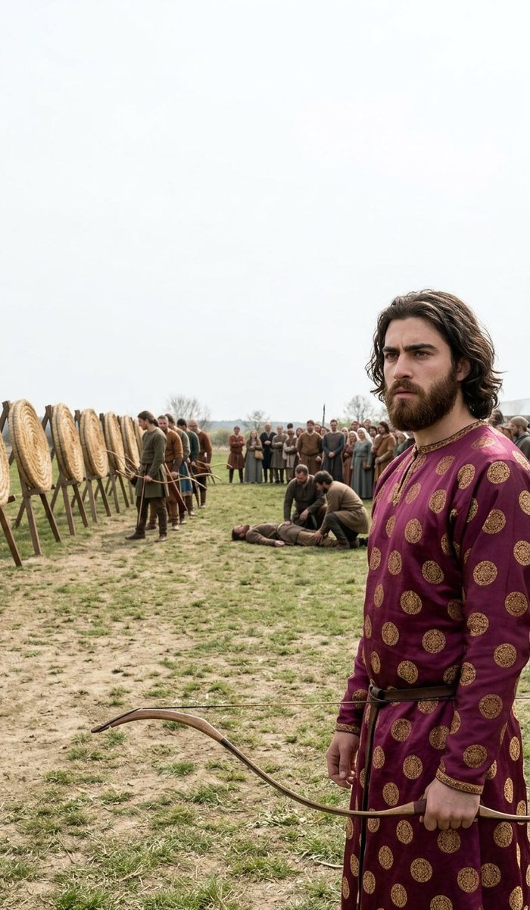
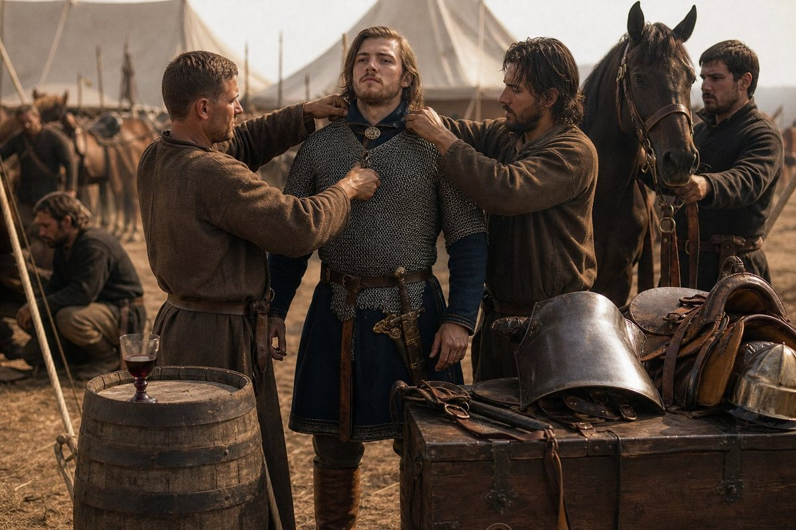
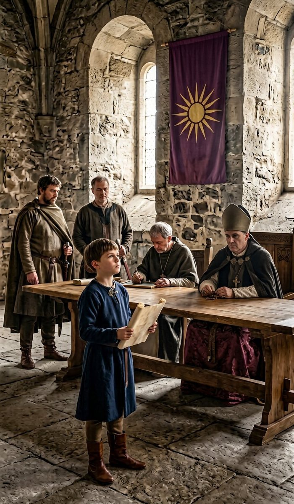

The tenth day of the eighth month
On the tenth day of the eighth month of 925, three months after the wedding at Modruš ended, the King of Bavaria declared war on Croatia, and the enemy was a man called Sulvan.
I want the shape of this war written down before any of its battles, because it is the longest war in the fifth volume and it is the first one this King has fought for something that was not already his.
Hesse was a county the crown had claimed for sixty years and fought four wars over. The holy war was declared against his father and inherited. The peasant rising and the Chalcedonian risings were inside his own realm. Croatia is different. Croatia is a country next to his, with its own lords and its own church and its own language, and on the tenth day of the eighth month of 925 the King of Bavaria, twenty-three years old, August for six weeks, declared war on it.
The war ran two years. It has four battles in the record with numbers for all four, and they are the strangest set of numbers in five volumes, and I am going to give them in order and let the reader watch the thing happen.

Murrhine
On the fifth day of the ninth month of 925, four weeks into the war, Dusica bore the King a third child, and the record gives the name: Murrhine.
I have written about the arithmetic of the other two and I am not going to do it again. Sophe in the fourth month of 922, on his birthday, while he was in Rome. Philainis in the eleventh month of 923, while he was in Rome. Murrhine in the ninth month of 925, while he was in Regensburg declaring a war on Croatia, which is at least a different room. The record gives the sex of neither Philainis nor Murrhine and I am not going to give it for them; it gives the names, and a name is what a chancery has.
The first day of the first month of 926
On the first day of the first month of 926 the army fought at Bihać: two thousand and fifty of ours against one thousand and seventy-nine of Bartol's, two hundred and seven of ours killed and three hundred and five of his.
Bartol is Sulvan's man. The record names him as the enemy in three of the four battles of this war and gives him nothing else: no country, no age, no house, no fate. He is the second commander in this book to be a name with numbers attached, after the abbot Baldassarre, and unlike the abbot he is going to be on the winning side of the worst day in it.
At Bihać we had two to his one and we lost a tenth of our army and he lost nearly a third of his, which is the arithmetic of a battle that goes the way it should.

The first day of the first month, the word
On the same day — I am not going to pretend it is a coincidence, because the chancery dates things by the day it writes them — the record says the King of Bavaria became an Aggressive Attacker.
I have written about these words three times in this volume and this is the last one I will do, and it is the one that matters, because unlike Mystic and Confider and August, this is a word about how a man fights.
He had gone to Rome twice. He had wept at a church door in the tenth month of 923. He had a reputation, in the record, for mysticism and for witchcraft and for being the sort of man a chancery calls a Confider. And on the first day of the first month of 926, having beaten an enemy at two to one on a winter field in Croatia, the record added the word that says: this man attacks.
I do not know what makes a chancery write that word on that day. I know what I have watched since the fourth month of 920, which is a king who declares wars and then leaves other men to fight them, and I know that at some point in the Croatian country the leaving stopped. The record does not say when. It gives me a date and a word, and the word is that the man who went to a school in Rome and wrote a poem about a cat now goes forward.
The fourth day of the second month
On the fourth day of the second month of 926 the army fought at Zagreb: one thousand nine hundred and seventy-seven of ours against eight hundred and fifty-three, ninety-eight of ours killed and two hundred and sixty-eight of his.
Ninety-eight. One man in twenty. That is the cheapest battle in this book and it is the sort of line that a man writing a chronicle of a war would like to have on every page, and it is a lie of the kind that a single page cannot tell: an army that has just fought a battle at two to one in the first month, four weeks later, against a smaller enemy, in a town, loses one man in twenty — and the reader should know that the other side's losses, two hundred and sixty-eight out of eight hundred and fifty-three, are the number that explains the ninety-eight.
There is one thing in this battle that I have to write down and cannot resolve. Zagreb is a county of Slavonia. It was taken by this crown in the ninth month of 912, given to Xenophon on the twenty-second day of the eighth month of 913, and has been the crown's own since; when Xenophon was killed in the seventh month of 921 it passed to Euthykritos, who is Duke of Slavonia now.
So in the second month of 926 the army of Bavaria fought a battle at a town that has been the crown's for thirteen years, against a Croatian enemy who according to the record had eight hundred and fifty-three men in it. Either the town had been lost between the tenth month of 925 and the second of 926, or the record means the country around it, or there are two places called Zagreb. The record does not say and I am not going to decide it for the record, and I set the puzzle here where the reader can see it, because a history which quietly smooths a thing like this is a history you cannot check.

The first day of the third month
On the first day of the third month of 926 the Kingdom of Bavaria acquired a border with the Byzantine Empire.
That is the record's sentence and it is worth more than the battle that came before it: ninety-six counties of Latin Europe on the edge of a thing of a hundred and seventeen that had not moved in six hundred years. Alexandros the Proud is on the throne of it, and his predecessor died of a dish of poisonous plants by mistake in the first month of 925, and the two facts together are the whole of what this book can say about the empire.
The border is in the east, in the Slavonian and Croatian country the crown has been eating since 913. It means nothing to a farmer and everything to a chancery. It means that from the first day of the third month of 926 the King of Bavaria's own vassals are men whose neighbors are the Romans, and that any war they fight from now on has a second audience.
Silviya and Andreas
Two deaths in the ninth month of 926, before the disaster, and I am going to do them in one section because they are the two ways a person leaves this book.
On the ninth day of the ninth month Silviya died of illness. She was of the old company, of the generation that came out of the north in 879; the record gives her death and the word illness and nothing else, and I did not know her well enough to write her an obituary, and I am not going to write a false one. There are three of that generation left now and I am one of them and I am sixty-eight.
On the twenty-seventh day of the ninth month Andreas was slain in battle.
I have to stop on that name, because this book has used it before. In the ninth month of 904 the company took Knin for Iljko the Monk against a man called Andreas who had two thousand men and lost them. That Andreas is an enemy on the wrong side of a wall in Slavonia twenty-two years ago. This Andreas is a champion of the Kingdom of Bavaria and he is killed in a battle that the record does not even name, in the ninth month of 926, in the Croatian war, and the only reason I know he was ours is the word champion.
They may be the same man. A man who loses Knin in 904 and is a champion of Bavaria in 926 would have changed the best part of himself, and the record does not say he did, and I am not going to write a life out of two names that are one letter apart from nothing at all. I print both and the reader may do as he likes.
Križevci, the first day of the twelfth month
On the first day of the twelfth month of 926 the army of Bavaria fought the army of Croatia at Križevci: one thousand nine hundred and eighteen of ours against one thousand seven hundred and sixty-six of Bartol's.
And nine hundred and ninety-nine of ours were killed.
I have written that number four times on this page and struck it out three. It is the largest number of dead in any battle in five volumes of this book; it is more than half of the army that went into the field; and it is the day the record itself marks, in the flat way it marks things, as his worst day.

I was not there. That is the first thing and I want it said plainly, because everything else I write about Križevci is going to be third hand and I would rather be honest about the route. I was at Regensburg with the ledger and the chest and a bad hip, and the news came in the twelfth month in a letter from a man of the household, and I read it standing up in the yard and then I went and sat down on the mounting block, which is the same block I sat on in the fifth month of 915 when a different letter came, and Stoyanka found me there and this time she did not go away.
What the letter said, beyond the numbers, is not in the record. The record gives the two armies, the nine hundred and ninety-nine, and the word lost.
So I am going to write what I know about a battle that is lost and I am going to mark every line of it as mine, because the record gives me none of it.
Nine hundred and ninety-nine dead out of one thousand nine hundred and eighteen is an army that did not retreat; it is an army that was broken and then came apart in a running fight, and the killing is always in the running. One thousand seven hundred and sixty-six men do not kill nine hundred and ninety-nine of anything in a line; they kill them in the four hours after the line goes, in the mud, at the fords, in the doorways of a village, with the survivors doing what men do, which is to run towards whatever is behind them and find out too late that it is a river.
That is the arithmetic and I have done it honestly. What I cannot give the reader is the part that matters, which is who was where. The record does not say whether the King was in the field at Križevci. It does not name a single lord who was killed there, or a single one who ran. It gives one number and the word lost and then it goes on to the next entry as though a chancery could not hear itself.
What nine hundred and ninety-nine is
I am going to spend one section on this number because it is the honest centre of the chapter and because I have been keeping a ledger for six years and this is the entry I was keeping it for.
The costliest days in this book, in order, before Križevci: Lengenfeld in the ninth month of 907, three hundred and twelve of ours; Speyer in the eleventh month of 917, four hundred and forty-seven; Koblenz in the third month of 918, five hundred and forty-seven; Diez in the fourth month of 924, four hundred and sixty-six; Siegen in the eighth month of 924, two hundred and sixty-five. Every one of those was a battle this realm won or came out of standing, and every one of them I wrote down as a terrible day.
Križevci is nine hundred and ninety-nine: more than Lengenfeld and Speyer together, and twice Diez. It is the worst day of the fifth volume and the worst day of the record, and it happens in a war that the King of Bavaria declared for a country next to his own, in the third year of it, on the first day of a December, in a place with a name I have never seen on any other page.
And the war went on. That is the part I want the reader to hold. Nine hundred and ninety-nine men dead and one thousand nine hundred and eighteen in the field means the army of Bavaria at Križevci ceased to exist as an army, and four months later there is another one, at Senj, of one thousand six hundred and twenty-five, and it wins.
I have written in this book that a company is a thing that can lose a Pramda and stay a company. A kingdom is a thing that can lose nine hundred and ninety-nine men in a December and be at Senj in March, and the reason is not courage and it is not a story: it is that ninety-six counties can produce another sixteen hundred men, and the men come because they are called, and they are called because the machine that calls them was built by a man who has been dead for six years and has not yet stopped working.
The first day of the third month of 927, and the problem of it
On the first day of the third month of 927 the army fought at Senj: one thousand six hundred and twenty-five of ours against Sulvan's two thousand six hundred and nineteen, one hundred and eighty-one of ours killed and six hundred and forty-eight of his.
We were outnumbered by a thousand men and we won, and we lost a ninth of the army doing it. Set against Križevci three months earlier it is not the same war: it is a different army, a different general and a different result, and the only thing the two battles have in common is the country.

And here is the problem, and I am going to set it out because it has cost me two nights.
The grand tournament at Vasvár ran from the second month of 927 to the sixth month of 927. Senj was fought on the first day of the third month of 927, in the middle of it. The record does not say whether the King of Bavaria was at Senj or at Vasvár on that day, and it does not say who commanded at Senj, and it does not have the grace to be vague about the tournament either: it has him at the butts in the fourth month, killing a peasant by accident, and winning the archery in the fifth.
So the reader has two possibilities and I have them too. Either the King of Bavaria was in Hungary at a tournament while one thousand six hundred and twenty-five of his men fought two thousand six hundred and nineteen Croats at Senj and beat them; or he rode from Vasvár to the coast and back in the spring of a tournament year, two hundred miles each way, and the record kept the archery and not the ride.
I do not know which. I am not going to choose. What I will say is that both of them are this man: a king who goes to a wedding for eight months and gains five counties, and a king who goes to a tournament in the middle of the worst war of his reign after losing nine hundred and ninety-nine men in a December — and that the second is only possible because the first worked. That is not a defence. It is the arithmetic of the fifth volume and I have been writing it for six chapters.
Vasvár
The grand tournament at Vasvár, in Hungary, from the second month to the sixth month of 927, and the host was Count Bohodar.
Bohodar.
I want that name to sit on the page for a moment. Ludwig, Wilbert, Bohodar and Adalhard: the four lords who came into the hall at Regensburg on the fifth day of the eleventh month of 920, walked past a Pontifex in a mitre and a count of four months and a woman who had just crowned the King, and did not swear. Four names in a row, and I wrote in the twenty-sixth chapter that the record was doing the one thing it does not often do, which is to set four men aside for the page after.
They were taken alive in the sixth month of 921, on the day the Saxon rising was beaten, and not killed. The King of Bavaria was nineteen and he did not execute four great lords who had refused him, and I called that cold and I stand by it.
And in the second month of 927 one of those four is the host of the grandest tournament in Hungary, and the record calls him a gracious host, and the King of Bavaria is his guest for five months.

That is the turn I was told to watch for and it takes one sentence: the man he imprisoned in 921 is the man who entertains him in 927, and it is fêted as gracious, and nobody in the record thinks it is strange.
I do not know what happened between them. The record gives Bohodar no years between the cell and the tournament: he goes from a prisoner in 921 to a host in 927 with nothing in between, and I am not going to fill it. What I will put beside it is Adalhard, the fourth of those names, who is the man who holds Trier by 932, and whose county was taken off the second Edouinos in the eighth month of 922 and given to a duke, which is what the record said and what I could not explain then.
Four men refused an oath. Six years later one of them holds a county that used to be a prince's, and another gives a tournament. I said in the twenty-sixth chapter that four names in a column are for the page after it. This is that page, and it says: the King of Bavaria does not break the men who come against him; he waits, and they come back in, and the coming back in is called a wedding or a tournament and not a surrender.
The twenty-second day of the fourth month
On the twenty-second day of the fourth month of 927, at the butts at Vasvár, the King of Bavaria accidentally killed a peasant with an arrow.
I am going to give the entry as it stands and then say what I can. An archery contest at a tournament in Hungary in the fourth month of 927, a crowd, butts set up in a field, a peasant — not a lord, not a guest, a man from the country who had come to watch and who was standing where a man from the country should not have been standing — and a king of twenty-four, on the day before his twenty-fifth birthday, who put an arrow through him by accident.

The record gives no name, no age, no village, no inquest, no fine, no penance and no pardon. It gives the word accidentally, which is the chancery taking a position, and it gives the death.
I have been in this trade for forty years and I have seen what a tournament does to the country people who come to watch it. There is no rope. There is a crowd of a thousand people standing in a field and there are men shooting at marks and the field is not a lists and the arrows come down somewhere. It is the most ordinary death in the world and it is also a man with a name being killed by a king, and the record gives me the king and the accident and not the name, and I am not going to invent one.
What I will write is the thing that is not in the record and that I am sure of, because I know him and I know the year he had had: he had lost nine hundred and ninety-nine men in a December, he was in a foreign country at a party, and in the fourth month of 927 he killed a peasant with an arrow at the butts, and the record has him there in the fourth month and winning the archery in the fifth. Whatever a man does with that, he does it inside himself and no chancery sees it.
The fifteenth day of the fifth month
On the fifteenth day of the fifth month of 927, at Vasvár, the King of Bavaria won the archery.
His second archery crown. The first was at Heves in the fifth month of 921, when he was nineteen and he tried a fancy shot to liven up the crowd and the record wrote that down because it was the most human thing in the volume.

He was twenty-five. Between the two archery crowns he had buried a brother of thirteen, declared two wars, gone to Rome twice, wept at a church door, lost nine hundred and ninety-nine men at Križevci, killed a peasant by accident three weeks before, and gained three counties in Croatia. And he won the archery, again, in front of a crowd, at a tournament given by a man he had put in a cell in 921, and the record gives it one line, because a chancery gives the result and not the man.
Twenty-one days later, on the sixth day of the sixth month, the tournament ended, and the record notes one thing about it that is not the King: Prince Chairestratos improved his equipment twice.
Chairestratos is his eldest brother, born at Linz on the third day of the first month of 906, and he was twenty-one at Vasvár. He is a duke, he is a drunkard and an adulterer by the record's own words, and at a tournament in Hungary he improved his equipment twice, which means he bought better armour or a better horse or both, and the chancery of Bavaria thought that was worth more than anything else any prince did in five months.
I find that funny and I am going to leave it funny. A book about a realm of ninety-six counties and nine hundred and ninety-nine dead men in a December has room for a duke of twenty-one buying a better breastplate twice, and it is the sort of thing that is true.
The thirteenth day of the seventh month
On the thirteenth day of the seventh month of 927 the war with Croatia ended.
Gacka and Lika were taken and kept. Two counties in the mountains behind the coast, and they are the crown's own from that day, which is to say they are in the King's own hand and not in a vassal's, and they are the first counties he has added to his own domain since the partition of 920.
The realm came to ninety-six counties. Modruš came in under Ladislav, the host of the wedding of 924, which is the last turn in this chapter and I will come to it in a moment.
Two years of war. Four battles: two hundred and seven, ninety-eight, nine hundred and ninety-nine, one hundred and eighty-one — one thousand four hundred and eighty-five of ours dead in all, and two counties kept. I have put the arithmetic down because the arithmetic is what this book has instead of a verdict, and the reader can do with fourteen hundred and eighty-five dead men and two counties whatever his own country's history has taught him to do.
The seventeenth day of the seventh month
On the seventeenth day of the seventh month of 927, four days after the war ended, Jihlava and Znojmo were given to his brother Edouinos.
The reader knows this boy. He was born at Regensburg on the eighth day of the first month of 917. He was given Trier in the partition of the seventh month of 920, at three years old. In the eighth month of 922 he stopped answering to the King directly and went under a duke, which I could not explain then and cannot explain now.
Jihlava and Znojmo were Euthykrates' counties: given to the boy who was killed in a siege at thirteen in the tenth month of 921, and held by the King himself ever since, because when a child of thirteen dies his counties come back to the crown.
Now they go to another boy, and the boy is ten years old.

I want to put the whole of this dynasty's arithmetic in one paragraph, because this is the last time in the volume I will have the pieces in my hand.
In the seventh month of 920 a custom took two thirds of a crown's own land and gave it to six boys. In the tenth month of 921 one of them is killed and his three counties come back to the crown. In the eighth month of 922 two of them go under dukes. In the tenth month of 924 the crown wins five counties in Hesse and gives them to men, not children, and I wrote that the realm is bigger and I did not know whether it was stronger. In the seventh month of 927 the crown takes two counties that came back to it from a dead child and gives them to another child, who is ten.
That is the rule of this house and it has not changed and it will not change. Counties belong to the family and the family is children, and a child cannot rebel, and the price of a kingdom that cannot be taken from you is that it is administered by people who cannot administer, and that the men who actually hold the land are the men you gave it to in the tenth month of 924 and who are waiting to see which way it falls.
And Modruš. Four days before Jihlava and Znojmo went to the boy, Modruš came in under Ladislav, which is to say the man whose wedding the King attended for eight months in 924 is now the crown's vassal for the castle he hosted him in, and the record does not say whether that was a war or an agreement, and I am not going to invent the difference.
Two years, nine hundred and ninety-nine men in one December and fourteen hundred and eighty-five in all, two counties kept, four new vassals and one boy of ten with two Moravian counties. That is the Croatian war.
The year, and the four subjects
The first subject was the old King's last years and his death, and this year took Silviya, of the generation of 879, and Andreas the champion, whose name the book has used before and whose life it cannot write.
The second was the rise of Antiphates. In two years he has become an Aggressive Attacker in the record's words, taken a border with the Roman empire, lost the worst battle of his house and won a battle outnumbered three months later, killed a peasant by accident, won the archery, gained two counties and kept them, and given two more to a brother of ten. He is twenty-five.
The third was the rebellion, and there is no rising in this chapter, and the rebellion has not gone away: it is Bohodar, a gracious host in Hungary, and Adalhard, holding Trier by 932, and the four names of 920 coming back into the record one at a time as guests.
The fourth is the precarious kingdom, and I am going to write what I actually think at the end of the Croatian war, because I am sixty-nine and this is the sixth chapter of the volume and it may be my last chance to say it plainly.
The realm is ninety-six counties. It has won a two-year war and lost nine hundred and ninety-nine men in an afternoon. It has a border with the Roman empire, Gacka and Lika in the King's own hand, a church that has not changed its mind, a brother of ten in two Moravian counties, and a king of twenty-five who was at a tournament in the middle of the worst month of it.
None of this coheres. Not one part of it fits against another part: the counties go to children and the armies are commanded by men who own nothing, the wars are declared in the King's name and fought by whoever is there, the prizes are given away four days after a peace, and the whole machine produces victories and disasters in the same year and goes on producing.
I wrote in the fourth chapter of this volume that it should have come apart and it did not. I am going to write something harder now. It does not hold together, and it does not come apart, and those two facts are the same fact: a realm of ninety-six counties held by a family and a set of arrangements is not a building that stands, it is a thing that keeps happening, and it will keep happening as long as the men who are called come when they are called and the family produces a boy with a good hand at the butts and a clerk to write it down.
*Here ends the sixth chapter of the fifth volume, at Regensburg in the eighth month of the year of grace 927, in the hand of Laurentios of the company, born above the Gulf of Corinth in 858, who was not at Križevci and read the nine hundred and ninety-nine in a letter in a yard, who was not at Senj and cannot tell the reader whether the King was there or in Hungary, who was not at Vasvár and has the tournament entirely from the record and from a boy of the household who carried the Prince's new breastplate twice, and who has now written the worst day in this book and the cheapest battle in it within eleven months of each other.*